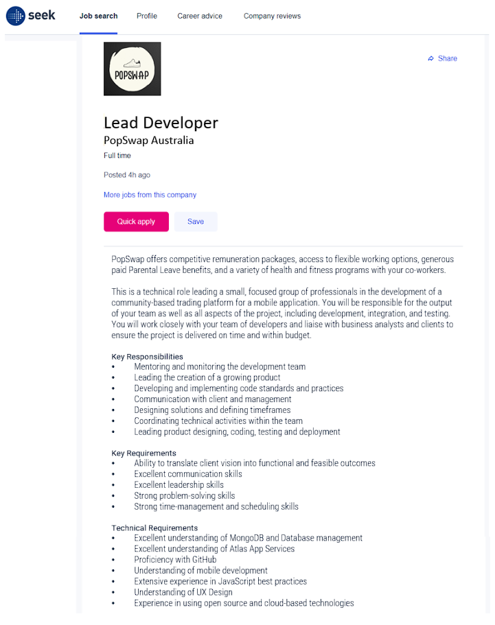
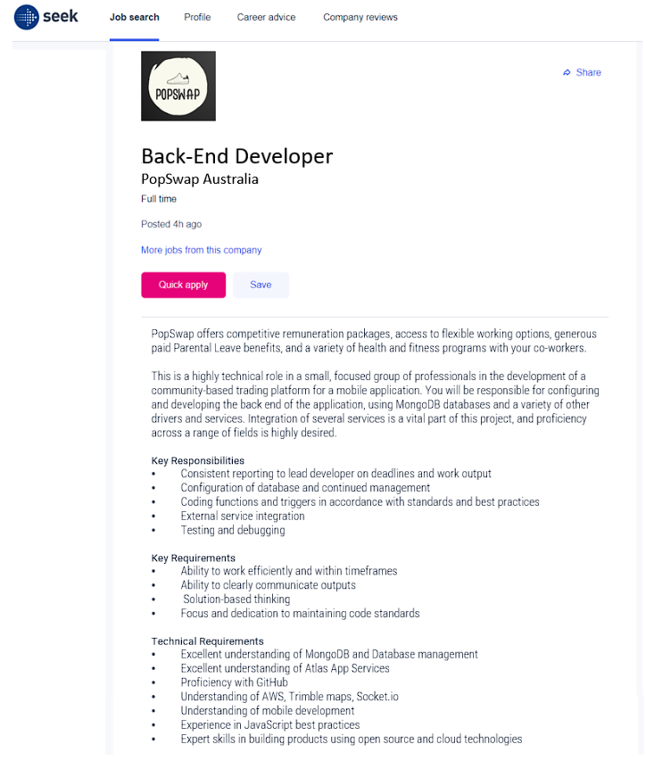
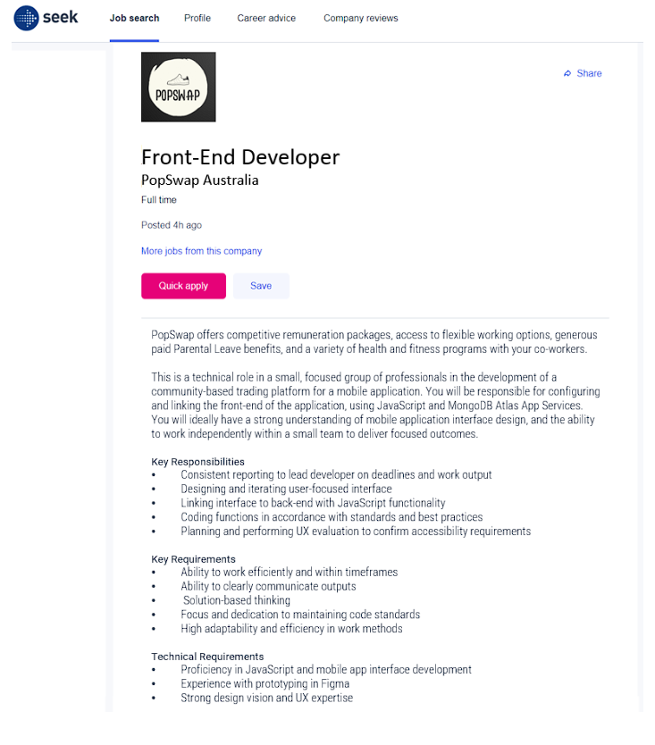
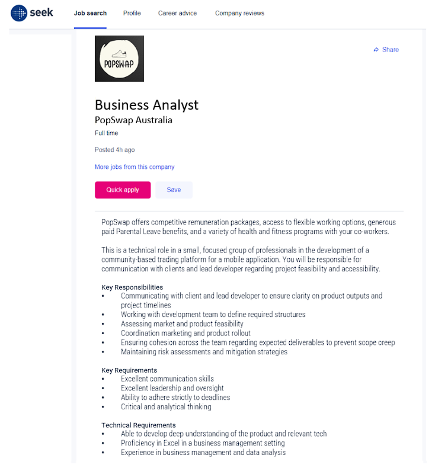

Lead Developer - Job Advert:

Back-End Developer - Job Advert:

Front-End Developer - Job Advert:

Business Analyst - Job Advert:

If the project were to be extended, a dedicated team of four professionals will be employed to deliver the final project outcomes. Mock-ups of Seek job adverts have been developed to outline each positions required soft, technical, and leadership skills: